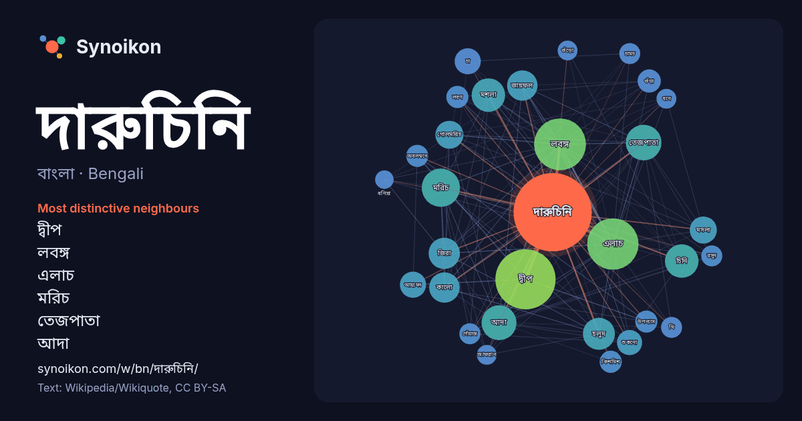

বাংলা · Bengali · word of the day list
দারুচিনি
“cinnamon” · The words found around it in 313 instances from Bengali Wikipedia, Wikiquote.

Most distinctive neighbours
- দ্বীপ 61×
- লবঙ্গ 54×
- এলাচ 53×
- মরিচ 30×
- তেজপাতা 27×
- আদা 25×
- মশলা 23×
- চিনি 22×
- জিরা 21×
- জায়ফল 20×
- হলুদ 19×
- গোলমরিচ 17×
- মসলা 16×
- কালো 15×
- চা 13×
- শুকনো 13×
- আহমেদ 12×
- গুঁড়া 12×
- কিশমিশ 11×
- লবণ 10×
× = how many times more often than in general Bengali Wikipedia text.
Most frequent neighbours
- দ্বীপ 74
- লবঙ্গ 55
- এলাচ 54
- মরিচ 30
- তেজপাতা 26
- আদা 25
- চিনি 23
- মশলা 23
- হলুদ 21
- জিরা 20
- কালো 19
- জায়ফল 19
- গোলমরিচ 16
- মসলা 15
- আহমেদ 14
- চা 14
- চলচ্চিত্র 13
- শুকনো 13
- গুঁড়া 11
- অবলম্বনে 10
In context
- দারুচিনি, (ইংরেজি নাম: Cinnamon) (বৈজ্ঞানিক নাম: Cinnamomus Zeylanicum) একটি মসলা বৃক্ষের নাম। স্বাভাবিক পরিবেশে এই বৃক্ষের উচ্চতা দশ থেকে পনের মিটার পর্যন্ত Wikipedia snippets · দারুচিনি
- দারুচিনি দ্বীপ অবলম্বনে নির্মিত এই চলচ্চিত্রের পরিচালনা করেছেন জাতীয় চলচ্চিত্র পুরস্কার বিজয়ী অভিনেতা ও স্বনামধন্য পরিচালক তৌকির আহমেদ। 'দারুচিনি দ্বীপ&# … Wikipedia snippets · দারুচিনি দ্বীপ
- পরবর্তীতে অবশ্য তিনি দারুচিনি দ্বীপ এর দ্বিতীয় খন্ড রূপালী দ্বীপ রচনা করেন, যেখানে তাদের মিশন দারুচিনি দ্বীপ পূর্ণতা লাভ করে। দারুচিনি দ্বীপ উপন্যাসটি নিয়ে Wikipedia snippets · দারুচিনি দ্বীপ (উপন্যাস)
- শহরতলি।'দারুচিনি উদ্যান' নামকরণ করা হয়েছে অত্র অঞ্চলে দারুচিনি চাষের ইতিহাস থেকে।১৭৮৯ সালে এলাকাটিতে ২৮৯ একর (১.১৭ বর্গকিলোমিটার) জুড়ে দারুচিনি গাছ ছিলো।বর্তমানে Wikipedia snippets · দারুচিনি উদ্যান
- চলচ্চিত্রে অভিনয় করেছেন। দারুচিনি দ্বীপ (উপন্যাস) অবলম্বনে রচিত চলচ্চিত্র দারুচিনি দ্বীপে রিয়াজ শুভ্র চরিত্রে অভিনয় করেন । উপন্যাস দারুচিনি দ্বীপ; ISBN 9844040027 Wikipedia snippets · শুভ্র (চরিত্র)
- হয়। ভারতীয় পদ্ধতিতে গরম মশলা তৈরি করার উপায়: কালো ও সাদা-মরিচ লবঙ্গ দারুচিনি আথবা দারুচিনির শুকনো বাকল জৈত্রী (জায়ফলের আংশবিশেষ) কালো (বড়ো) ও সবুজ Wikipedia snippets · গরম মসলা
- পর্দায় অভিনয় করেও সুনাম অর্জন করেছেন। তার অভিনীত প্রথম চলচ্চিত্র ছিল "দারুচিনি দ্বীপ"। তিনি জাহাঙ্গীরনগর বিশ্ববিদ্যালয় হতে ব্যবসায় প্রশাসন বিদ্যায় Wikipedia snippets · আফসানা আরা বিন্দু
- ২০০৭ সালে, তিনি দারুচিনি দ্বীপ চলচ্চিত্রের জন্য বাংলাদেশ জাতীয় চলচ্চিত্র পুরস্কার শ্রেষ্ঠ নৃত্য পরিচালক হিসেবে পুরস্কার জিতে নেন। দারুচিনি দ্বীপ – ২০০৭ Wikipedia snippets · কবিরুল ইসলাম রতন
More Bengali words
- অরণ্য
- আয়না
- ইতিহাস
- ঈশ্বর
- কাজ
- কুকুর
- ক্ষমতা
- খাদ্য
- গান
- গ্রীষ্ম
- ঘড়ি
- ঘণ্টা
- ঘোড়া
- ছায়া
- জননী
- জলবায়ু
- জীবন
- ঝড়
- টাকা
- ট্রেন
- দ্বীপ
- নক্ষত্র
- নীরবতা
- পরিবার
- পানি
- পাহাড়
- প্রকৃতি
- বাগান
- বিজ্ঞান
- বিড়াল
- বৃষ্টি
- ভাষা
- মধু
- মরুভূমি
- মানচিত্র
- মৃত্যু
- রাস্তা
- রুটি
- লবণ
- শরৎ
- শহর
- শিল্প
- শীত
- সত্য
- সময়
- সেতু
- সোনা
- স্বাস্থ্য
- হৃদয়
Precomputed on 2026-10-09 with default settings (±5 words, medium corpus). The interactive map can refresh it with live data.